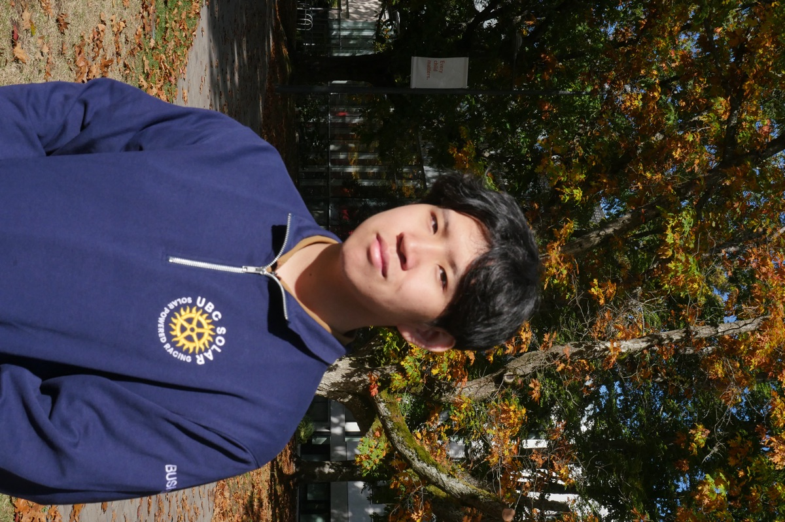

about
I'm a junior studying Business Technology Management with a minor in Linguistics, two fields that keep asking the same question: how do people actually communicate?
Language became personal to me long before it became academic, and that's what keeps pulling me toward the seam between product and speech. I'm especially drawn to the moment a voice interface either earns someone's trust or loses it forever.
I'm building towards understanding this through PM work, human resources, and computational linguistics.
